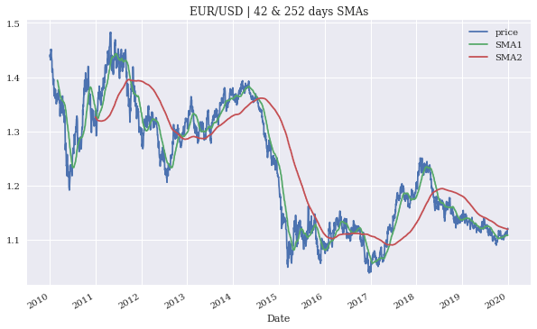
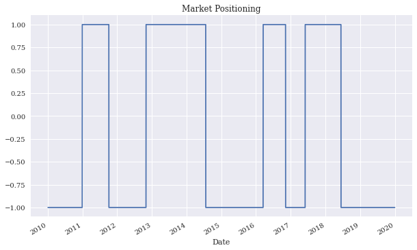
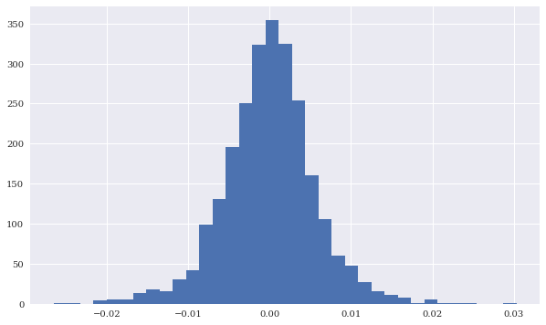
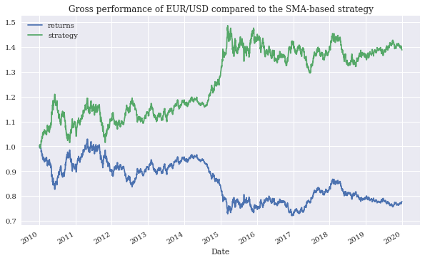

import numpy as np
import numpy.random as npr
import pandas as pd
%matplotlib inline
from pylab import mpl, plt
plt.style.use('seaborn')
plt.rcParams['savefig.dpi'] = 300
plt.rcParams['font.family'] = 'serif'
import csv, math, random
import tables as tb
import configparser
c = configparser.ConfigParser()
c.read('pyalgo.cfg')
import quandl as q
q.ApiConfig.api_key = c['quandl']['api_key']
https://www.quandl.com/data/BCHAIN/MKPRU-Bitcoin-Market-Price-USD
def generate_sample_data (rows, cols, freq='1min'):
''' Function to generate sample financial data.
Parameters
==========
rows: int
number of rows to generate
cols: int
number of columns to generate
freq: str
frequency string for DatetimeIndex
Returns
=======
df: DataFrame
DataFrame object with the sample data
'''
r = 0.05 # constant short rate
sigma = 0.5 # volatility factor
rows = int(rows)
cols = int(cols)
# generate a DatetimeIndex object given the frequency
index = pd.date_range('2021-1-1', periods=rows, freq=freq)
# determine time delta in year fractions
dt = (index[1] - index[0]) / pd.Timedelta(value='365D')
# generate column names
columns = ['No%d' % i for i in range(cols)]
# generate sample paths for geometric Brownian motion
raw = np.exp(np.cumsum((r - 0.5 * sigma ** 2) * dt + sigma * np.sqrt(dt) * npr.standard_normal((rows, cols)), axis=0))
# normalize the data to start at 100
raw = raw / raw[0] * 100
# generate the DataFrame object
df = pd.DataFrame(raw, index=index, columns=columns)
return df
Ch. 1 Python and Algorithmic Trading¶
%%time
S0 = 100
r = 0.05
T = 1
sigma = 0.2
values = []
for _ in range(1_000_000):
ST = S0 * math.exp((r - 0.5 * sigma ** 2) * T + sigma * random.gauss(0, 1) * math.sqrt(T))
values.append(ST)
CPU times: user 1.18 s, sys: 24.4 ms, total: 1.21 s
Wall time: 1.21 s
%%time
S0 = 100
r = 0.05
T = 1
sigma = 0.2
ST = S0 * np.exp((r - 0.5 * sigma ** 2) * T + sigma * npr.standard_normal(1_000_000) * np.sqrt(T))
CPU times: user 39.6 ms, sys: 8.21 ms, total: 47.9 ms
Wall time: 46.8 ms
1.21e0 / 46.8e-3
25.85470085470085
d = q.get('BCHAIN/MKPRU')
d.info()
<class 'pandas.core.frame.DataFrame'>
DatetimeIndex: 4524 entries, 2009-01-02 to 2021-05-22
Data columns (total 1 columns):
# Column Non-Null Count Dtype
--- ------ -------------- -----
0 Value 4524 non-null float64
dtypes: float64(1)
memory usage: 70.7 KB
d['Value'].resample('A').last()
Date
2009-12-31 0.000000
2010-12-31 0.299998
2011-12-31 4.470000
2012-12-31 13.570000
2013-12-31 746.900000
2014-12-31 315.700000
2015-12-31 428.230000
2016-12-31 958.120000
2017-12-31 14165.575000
2018-12-31 3791.545833
2019-12-31 7219.600000
2020-12-31 28856.590000
2021-12-31 37280.350000
Freq: A-DEC, Name: Value, dtype: float64
d['SMA'] = d['Value'].rolling(100).mean()
d.loc['2013-1-1':].plot(title='BTC/USD exchange rate', figsize=(10, 6));

Ch. 3 Working with Financial Data¶
with open('data/AAPL.csv', 'r') as f:
for _ in range(5):
print(f.readline(), end='')
Date,HIGH,CLOSE,LOW,OPEN,COUNT,VOLUME
2020-04-01,248.72,240.91,239.13,246.5,460606.0,44054638.0
2020-04-02,245.15,244.93,236.9,240.34,380294.0,41483493.0
2020-04-03,245.7,241.41,238.9741,242.8,293699.0,32470017.0
2020-04-06,263.11,262.47,249.38,250.9,486681.0,50455071.0
data = pd.read_csv('data/AAPL.csv', index_col=0, parse_dates=True)
data.info()
<class 'pandas.core.frame.DataFrame'>
DatetimeIndex: 21 entries, 2020-04-01 to 2020-04-30
Data columns (total 6 columns):
# Column Non-Null Count Dtype
--- ------ -------------- -----
0 HIGH 21 non-null float64
1 CLOSE 21 non-null float64
2 LOW 21 non-null float64
3 OPEN 21 non-null float64
4 COUNT 21 non-null float64
5 VOLUME 21 non-null float64
dtypes: float64(6)
memory usage: 1.1 KB
data.to_excel('data/aapl.xlsx', 'AAPL')
data.to_json('data/aapl.json')
data_copy_1 = pd.read_excel('data/aapl.xlsx', 'AAPL', index_col=0)
display(data_copy_1.head())
data_copy_2 = pd.read_json('data/aapl.json')
display(data_copy_2.head())
| HIGH | CLOSE | LOW | OPEN | COUNT | VOLUME | |
|---|---|---|---|---|---|---|
| Date | ||||||
| 2020-04-01 | 248.72 | 240.91 | 239.1300 | 246.50 | 460606 | 44054638 |
| 2020-04-02 | 245.15 | 244.93 | 236.9000 | 240.34 | 380294 | 41483493 |
| 2020-04-03 | 245.70 | 241.41 | 238.9741 | 242.80 | 293699 | 32470017 |
| 2020-04-06 | 263.11 | 262.47 | 249.3800 | 250.90 | 486681 | 50455071 |
| 2020-04-07 | 271.70 | 259.43 | 259.0000 | 270.80 | 467375 | 50721831 |
| HIGH | CLOSE | LOW | OPEN | COUNT | VOLUME | |
|---|---|---|---|---|---|---|
| 2020-04-01 | 248.72 | 240.91 | 239.1300 | 246.50 | 460606 | 44054638 |
| 2020-04-02 | 245.15 | 244.93 | 236.9000 | 240.34 | 380294 | 41483493 |
| 2020-04-03 | 245.70 | 241.41 | 238.9741 | 242.80 | 293699 | 32470017 |
| 2020-04-06 | 263.11 | 262.47 | 249.3800 | 250.90 | 486681 | 50455071 |
| 2020-04-07 | 271.70 | 259.43 | 259.0000 | 270.80 | 467375 | 50721831 |
data = q.get('FSE/SAP_X', start_date='2018-1-1', end_date='2021-05-01')
vol = q.get('VOL/MSFT')
vol.iloc[:, :10].info()
vol[['IvMean30', 'IvMean60', 'IvMean90']].tail()
<class 'pandas.core.frame.DataFrame'>
DatetimeIndex: 730 entries, 2018-01-02 to 2020-12-01
Data columns (total 10 columns):
# Column Non-Null Count Dtype
--- ------ -------------- -----
0 Open 408 non-null float64
1 High 730 non-null float64
2 Low 730 non-null float64
3 Close 730 non-null float64
4 Change 0 non-null object
5 Traded Volume 684 non-null float64
6 Turnover 684 non-null float64
7 Last Price of the Day 0 non-null object
8 Daily Traded Units 0 non-null object
9 Daily Turnover 0 non-null object
dtypes: float64(6), object(4)
memory usage: 62.7+ KB
%time data = generate_sample_data(rows=5e6, cols=10).round(4)
h5 = pd.HDFStore('data/data.h5', 'w')
%time h5['data'] = data
h5.close()
CPU times: user 3.34 s, sys: 623 ms, total: 3.96 s
Wall time: 3.96 s
CPU times: user 313 ms, sys: 442 ms, total: 755 ms
Wall time: 1.18 s
%time data = generate_sample_data(rows=5e6, cols=10).round(4)
%time data.to_hdf('data/data.h5', 'data', format='table')
%time data_copy = pd.read_hdf('data/data.h5', 'data')
CPU times: user 3.38 s, sys: 735 ms, total: 4.11 s
Wall time: 4.12 s
CPU times: user 2.93 s, sys: 390 ms, total: 3.32 s
Wall time: 3.35 s
CPU times: user 209 ms, sys: 195 ms, total: 404 ms
Wall time: 408 ms
h5 = tb.open_file('data/data.h5', 'r')
h5
h5.root.data.table[:3]
h5.close()
Ch. 4 Mastering Vectorized Backtesting¶
raw = pd.read_csv('http://hilpisch.com/pyalgo_eikon_eod_data.csv', index_col=0, parse_dates=True).dropna()
raw.info()
<class 'pandas.core.frame.DataFrame'>
DatetimeIndex: 2516 entries, 2010-01-04 to 2019-12-31
Data columns (total 12 columns):
# Column Non-Null Count Dtype
--- ------ -------------- -----
0 AAPL.O 2516 non-null float64
1 MSFT.O 2516 non-null float64
2 INTC.O 2516 non-null float64
3 AMZN.O 2516 non-null float64
4 GS.N 2516 non-null float64
5 SPY 2516 non-null float64
6 .SPX 2516 non-null float64
7 .VIX 2516 non-null float64
8 EUR= 2516 non-null float64
9 XAU= 2516 non-null float64
10 GDX 2516 non-null float64
11 GLD 2516 non-null float64
dtypes: float64(12)
memory usage: 255.5 KB
data = pd.DataFrame(raw['EUR='])
data = data.rename(columns={'EUR=': 'price'})
data.info()
<class 'pandas.core.frame.DataFrame'>
DatetimeIndex: 2516 entries, 2010-01-04 to 2019-12-31
Data columns (total 1 columns):
# Column Non-Null Count Dtype
--- ------ -------------- -----
0 price 2516 non-null float64
dtypes: float64(1)
memory usage: 39.3 KB
data['SMA1'] = data['price'].rolling(42).mean()
data['SMA2'] = data['price'].rolling(252).mean()
data.plot(title='EUR/USD | 42 & 252 days SMAs', figsize=(10, 6));

data['position'] = np.where(data['SMA1'] > data['SMA2'], 1, -1)
data['position'].plot(ylim=[-1.1, 1.1], title='Market Positioning', figsize=(10, 6));

data['returns'] = np.log(data['price'] / data['price'].shift(1))
data['returns'].hist(bins=35, figsize=(10, 6));

data['strategy'] = data['position'].shift(1) * data['returns']
data[['returns', 'strategy']].sum()
returns -0.251186
strategy 0.327576
dtype: float64
data[['returns', 'strategy']].sum().apply(np.exp)
returns 0.777878
strategy 1.387600
dtype: float64
data[['returns', 'strategy']].cumsum().apply(np.exp).plot(title='Gross performance of EUR/USD compared to the SMA-based strategy', figsize=(10, 6));
